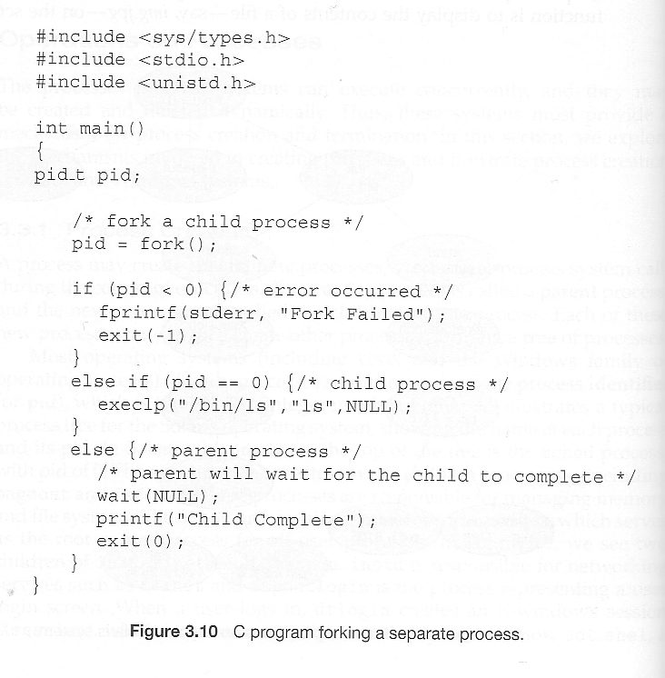
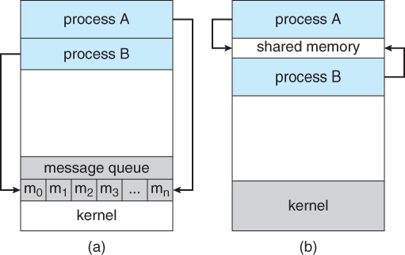
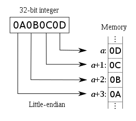

x = x + a , in context of a concurrent system?At machine level, x = x + a is implemented in multiple instructions :
x into register.a to the register value.For concurrent systems, race condition can come and result in multiple processes/threads reading the old value simultaneously and updating independently. This will result in overwriting results from each other. To implement the code safely, we need to acquire write-lock (mutually exclusive lock) before writing our value. This will result in updating of value sequentially which will avoid the race condition:
1 | void add(x, a) { |
inode in file system?inode is a type of data-structure in a UNIX-style file system, and is used to store a file’s metadata such as block location, owner, time of last change, etc.
In Linux Operaing System, Two files can have same inode number: In linux kernel Inode numbers are filesystem-specific and are created to index files locally. There is no mechanism for filesystems to coordinate across partitions and devices and future-connected devices to decide unique inode numbers. A file is identified by first identifying the device and an inode within the device. therefore two files on different devices or partitions can have same inode number. Hardlink is a good example.
The scheduler is an operating system module that selects the next jobs to be admitted into the system and the next process to run.
fork() system call1 | // From Advanced Programming in the Unix Environment Figure 8.1 |
The fork() system call is called once and returns twice. In child process, when we modify the local and global variables which are located in stack and heap respectively of the child process, only the child process will be affected with output:
1 | before fork |

When a process is created in UNIX using fork() system call, the address space of the Parent process is replicated. If the parent process calls wait() system call, then the execution of parent is suspended until the child is terminated. At the termination of the child, a ‘SIGCHLD’ signal is generated which is delivered to the parent by the kernel. Parent, on receipt of ‘SIGCHLD’ reaps the status of the child from the process table. Even though, the child is terminated, there is an entry in the process table corresponding to the child where the status is stored. When parent collects the status, this entry is deleted. Thus, all the traces of the child process are removed from the system. If the parent decides not to wait for the child’s termination and it executes its subsequent task, then at the termination of the child, the exit status is not read. Hence, there remains an entry in the process table even after the termination of the child. This state of the child process is known as the Zombie state.
Different ways in which creation of Zombie can be prevented:-
wait() system call : When the parent process calls wait(), after the creation of child, it indicates that, it will wait for the child to complete and it will reap the exit status of the child. The parent process is suspended(waits in a waiting queue) until the child is terminated. It must be understood that during this period, the parent process does nothing just waits.1 | // A C program to demonstrate working of |
SIGCHLD signal : When a child is terminated, a corresponding SIGCHLD signal is delivered to the parent, if we call the ‘signal(SIGCHLD,SIG_IGN)’, then the SIGCHLD signal is ignored by the system, and the child process entry is deleted from the process table. Thus, no zombie is created. However, in this case, the parent cannot know about the exit status of the child.1 | // A C program to demonstrate ignoring |
SIGCHLD signal. The signal handler calls wait() system call within it. In this senario, when the child terminated, the SIGCHLD is delivered to the parent.On receipt of SIGCHLD, the corresponding handler is activated, which in turn calls the wait() system call. Hence, the parent collects the exit status almost immediately and the child entry in the process table is cleared. Thus no zombie is created.1 | // A C program to demonstrate handling of |
ls?First of all, whenever we press a key on keyboard, the keyboard controller will emit an interrupt signal to processor(CPU) indicating there is an event that needs immediate attention. As interrupts usually have high priority, the processor will suspending its current execution, save its state, and call an interrupt handler(should be the one that handles keyboard interrupt). Suppose we type ‘l’ then this character will be written the file that fd stdout points to, while shell’s stdout usually points to screen (a device, in *nix familiy, everything “looks” like a file), then “l” will be shown on the screen. After the interrupt handler finishes its job, the process will resume its original work.
We type ‘ls’ and hit enter, then shell will first check out $PATH environment variable to see if there is a program ‘ls’ under each given path. Suppose we find /usr/bin/ls. Shell will call fork(), followed by execve("/usr/bin/ls"). fork() will create an identical child process and return twice. In parent(shell), it will typically call wait() to wait child process to complete. In child, it will execute execve() and a successful execve() will replace original data(including text, data, heap and stack, etc) in the child process’s address space with new data in order to run the new executable. Note that file descriptors opened by parent will be kept(that is why output from ls will be displayed on screen like shell).
Then the child process will be one that runs /usr/bin/ls code, it will make system calls(open(2), printf(3c) etc.) to list directory entries in the current working directory. After the child process finishes its job, it will call exit()(usually called implicitly by ‘return’ in main()). Then all of the fds, streams will be closed. The parent process(in this case the shell) will be notified of child’s termination, so wait() will be return and child exit code could be read from wait(). Then parent process(the shell) can proceed, waiting for next command to run.
What will happen if another interrupt is received while the processor is running interrupt handler code?
A: Different OS may have different ways to deal with this situation. For linux, task of an interrupt handler is split into two halves, top half and bottom half. Top half runs with interrupts disabled and respond to the interrupt as fast as possible, then bottom half runs with interrupts enabled for as long as it needs and could be preempted.
How does shell implement I/O redirection if we want to redirect output of ls to another command as its input? like ls | sort:
A: Briefly speaking, shell will call a pipe() before fork() to get two fds, rfd for read end and wfd for write end, then call dup2(wfd, 1) in ls and dup2(rfd, 0) in sort.
There are two types of interrupts: hardware interrupt(which caused by external device, like keyboard, mouse, disk, etc) and software interrupt(which caused by program, like system call, divide-by-zero)
If a 进程 wishes to access another process’ resources, inter-process communications have to be used. These include 管道, 文件, socks, and other forms.
A context switch is the time spent switching between two processes. This happens in multitasking. The operating system must bring the state information of waiting processes into memory and save the state information of the currently running process.
怎么知道发生了上下文切换: 我们不知道。
Another issue is that swapping is governed by the scheduling algorithm of the operating system and there may be many kernel level threads which are also doing context switches
In order to overcome these obstacles, 构建环境 such that after P1 executes, 任务调度器立马选择 P2 去运行. This may be accomplished by constructing a data channel, such as 管道, between P1 and P2 and having the two processes play a game of ping-pong with a data token.
That is, let’s allow P1 to be the initial sender and P2 to be the receiver. Initially, P2 is blocked (sleeping) as it awaits the data token. When P1 executes, it delivers the token over the data channel to P2 and immediately attempts to read a response token. However, since P2 has not yet had a chance to run, no such token is available for P1 and the process is blocked.This relinquishes the CPU.
A context switch results and the task scheduler must select another process to run. Since P2 is now in a ready-to-run state, it is a desirable candidate to be selected by the task scheduler for execution. When P2 runs, the roles of P1 and P2 are swapped. P2 is now acting as the sender and P1 as the blocked receiver. The game ends when P2 returns the token to P1.
1 | T = 2 * (Time of deliver + Time of context switch + Time of receive) |
1 | P1 ---token---> CPU Context Switch ---token---> P2 |
P1 will be able to easily compute T, since this is just the time between events 3 and 8. So, to solve for Tc’ we must first determine the value of Td + Tr·
How can we do this? We can do this by measuring the length of time it takes P1 to send and receive a token to itself. This will not induce a context switch 因为 P1 发送的时候已经运行在 CPU 上了，并不会阻塞它.
The game is played a number of iterations to average out any variability in the elapsed time between steps 2 and 9 that may result from unexpected kernel interrupts and additional kernel threads contendingfor the CPU. We select the smallest observed context switch time as our final answer.
However, all we can ultimately say that this is an approximation which depends on the underlying system. For example, 我们假设一旦数据准备好，P2立马被调度运行. However, this is dependent on the implementation of the task scheduler and we cannot make any guarantees.
That’s okay; it’s important in an interview to recognize when your solution might not be perfect
(1) 要么成要么不成:
1 | public class Chopstick { |
1 | public class Philosopher extends Thread { |
(2) 优先级筷子:
为每一根筷子赋予一个数字 0 ~ N-1，每一位哲学家都得优先获取数字较小的那根筷子。
1 | public class Philosopher extends Thread { |
There are several common ways to prevent deadlocks. One of the popular ways is to require a process to declare upfront what locks it will need. We can then verify if a deadlock would be created by issuing these locks, and we can fail if so.
A lock in Java is owned by 相同的线程 which locked it.
1 | public class Foo { |
FAT32 支持的最大文件大小: FAT32 was implemented on 32-bit hardware for a 32-bit operating system with a 32-bit compiler, so it’s an obvious choice and anything beyond 32 bits would have cost precious processor cycles, disk space and programming time. (In those days, we thought 4GB was pretty large for an HD, let alone for a single file.) 
child code:
1 | int exitCode; |
parent code:
1 | pid_t pid; |
Processes may also be terminated by the system for a variety of reasons, including:
KILL command, or other un handled process interrupt.nohup command allows a child to 继续执行 after 父进程已经退出. )Communications models:

busy=0 时，表示IO完成。此时读取一个字的过程才结束，接着读取下一个字。
